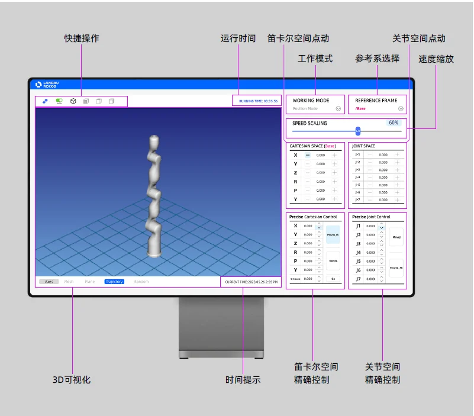
ROCOS
An open robot control system.
A modular control stack connecting robot applications, EtherCAT devices, and a visual programming interface.
Motion control · System integration · Open source
Explore ROCOSRobotics researcher.
I build robot control systems for precise motion, compliant interaction, and real-world experiments.
Shenyang Institute of Automation
Chinese Academy of Sciences
The preview is unavailable. Open the full project
From the control stack
to the physical machine.

An open robot control system.
A modular control stack connecting robot applications, EtherCAT devices, and a visual programming interface.
Motion control · System integration · Open source
Explore ROCOSSeven axes. Shared space.
A collaborative robot with joint torque sensing and ROCOS control, built to explore compliant motion and human–robot interaction.
With Yunxiang Jiang · Manufacturing: Landau Robotics
Meet TALON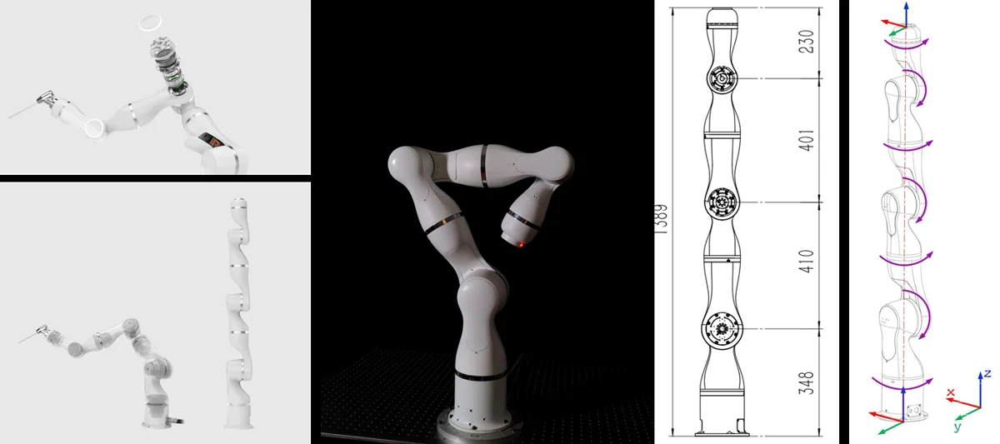

Where control meets hardware.
Four iterations of driver electronics for position tracking, compliant response, and collision detection.
With Chuanzhi Gao, You Wan & Yunxiang Jiang
Inside the driverConnecting algorithms,
machines, and people.
Servo and motion control, kinematics and dynamics, trajectory planning, and compliant motion control.
Robot control systemsHuman–robot interaction, dexterous manipulation, and vision–force hybrid control.
Collaborative roboticsSkill and imitation learning, robot system integration, and experimental applications.
Robot experimenterHardware, software,
and the experiments between.
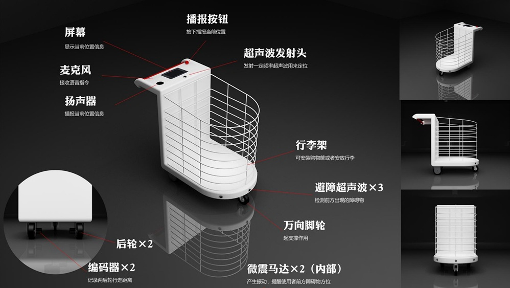
Mobile assistance for indoor walking.
System · HMI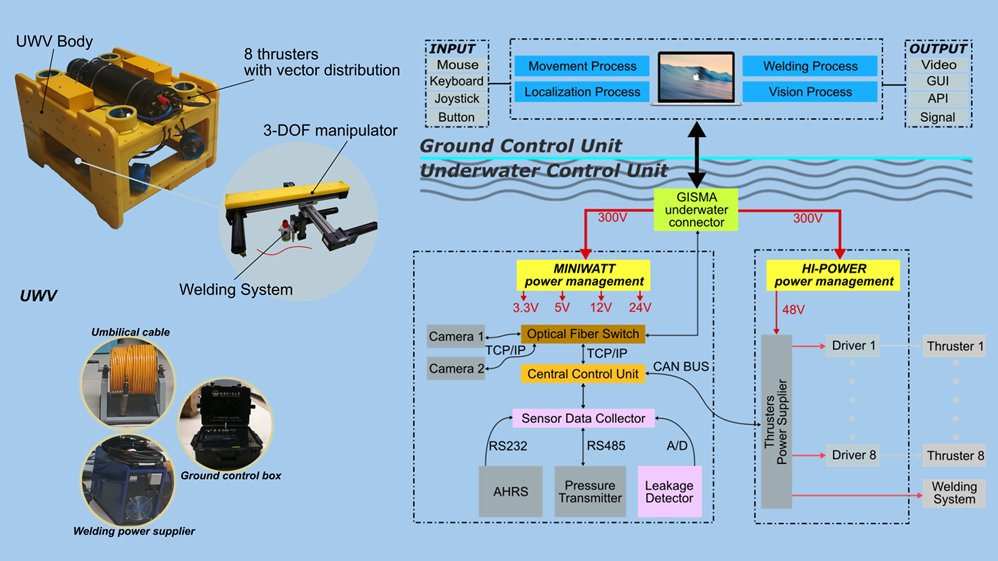
Localization and motion control for underwater welding.
System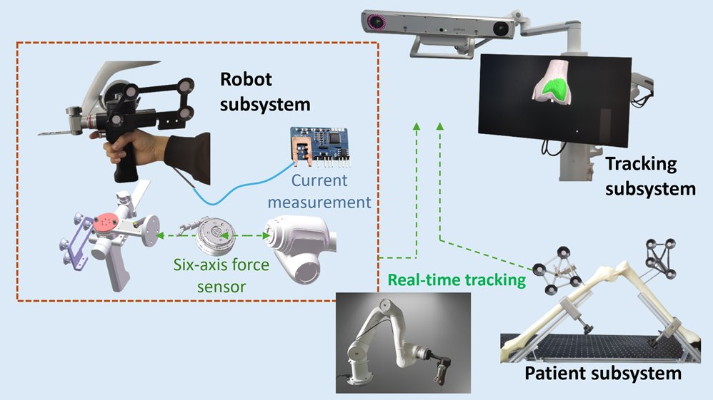
A robotic system for knee arthroplasty.
System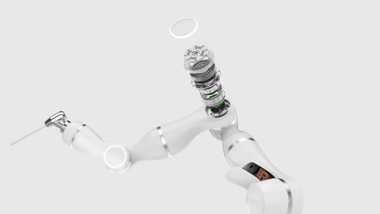
A seven-degree-of-freedom collaborative robot.
System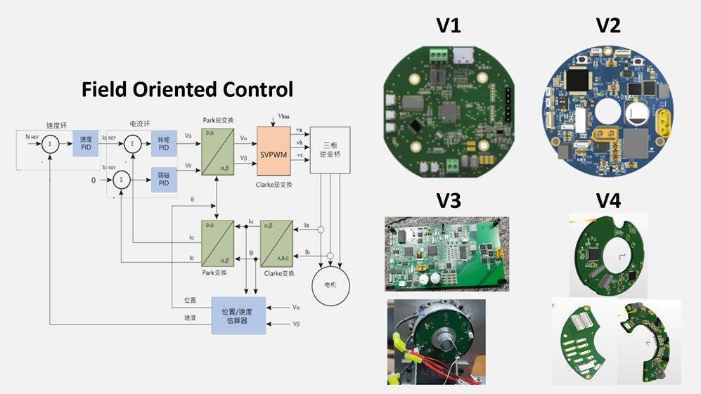
Integrated electronics for compliant robot motion.
System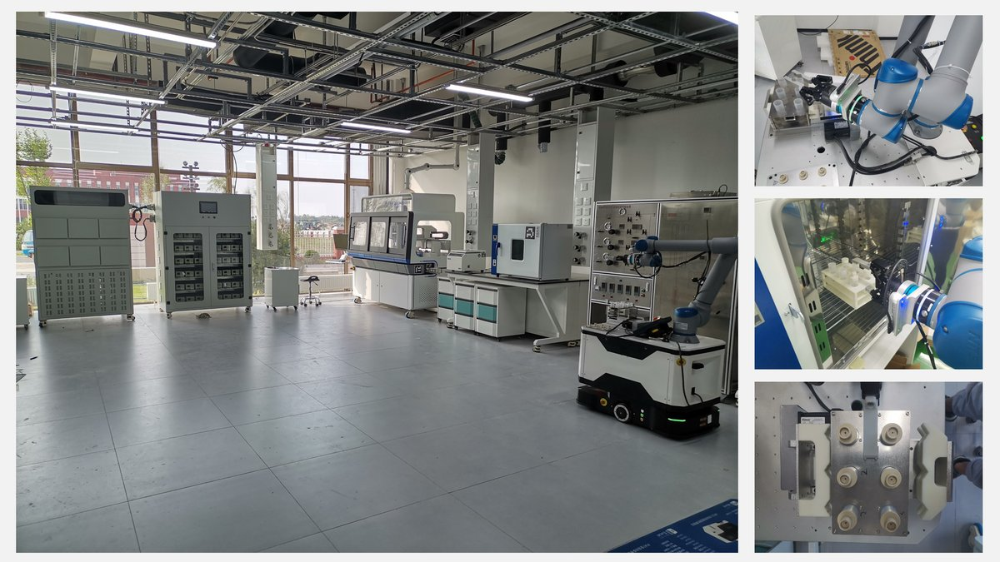
Robot systems for automated laboratory work.
System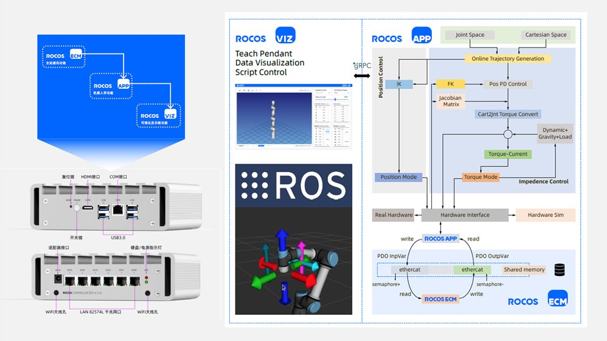
An open architecture for robot control and integration.
Control · HMI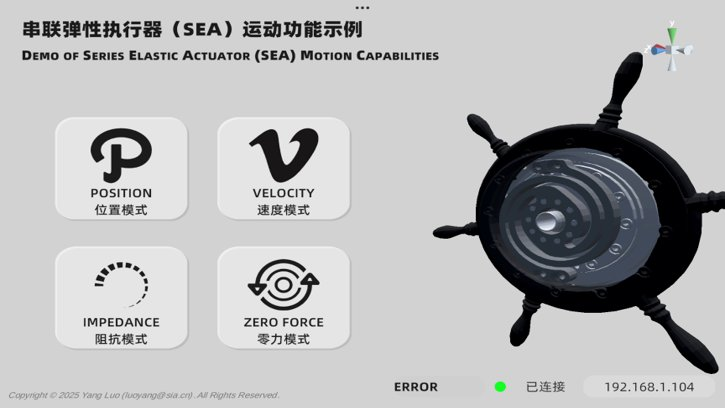
An application for series elastic actuator experiments.
HMI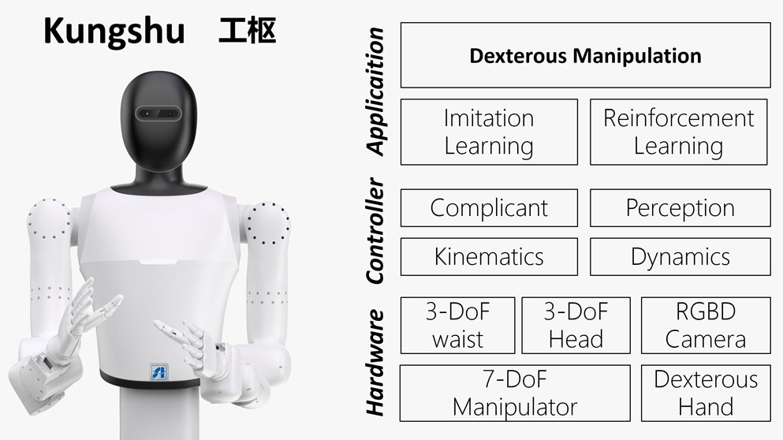
A control framework for humanoid robots.
Control
A robot controller for the Diana 7 platform.
System · Control
Software tools for force–torque sensing.
Control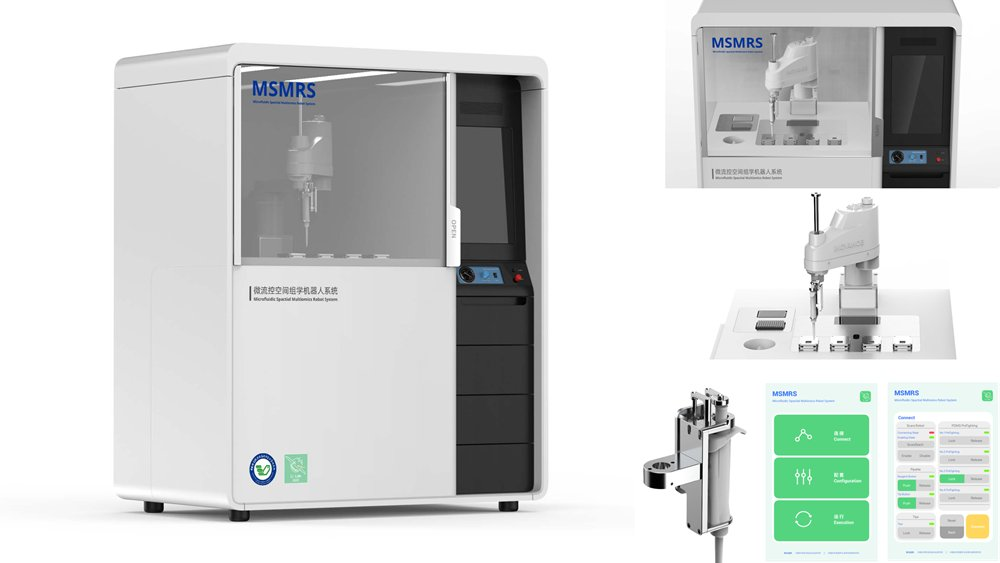
Motion control research and experimental demonstrations.
ControlNo projects match this category.
Research in print.
Methods, experiments, and results.
I work at the intersection
of software and robotics.
I'm Yang Luo, a robotics researcher at the Shenyang Institute of Automation, Chinese Academy of Sciences. I received my Ph.D. in 2019 from the State Key Laboratory of Robotics and Systems at Harbin Institute of Technology.
I enjoy designing robot architectures, programming motion, and contributing to open-source tools. My work connects robot system integration, motion control, trajectory planning, human–robot interaction, and dexterous manipulation.
Let's talk roboticsI value well-designed software architectures, clear design patterns, and maintainable code.
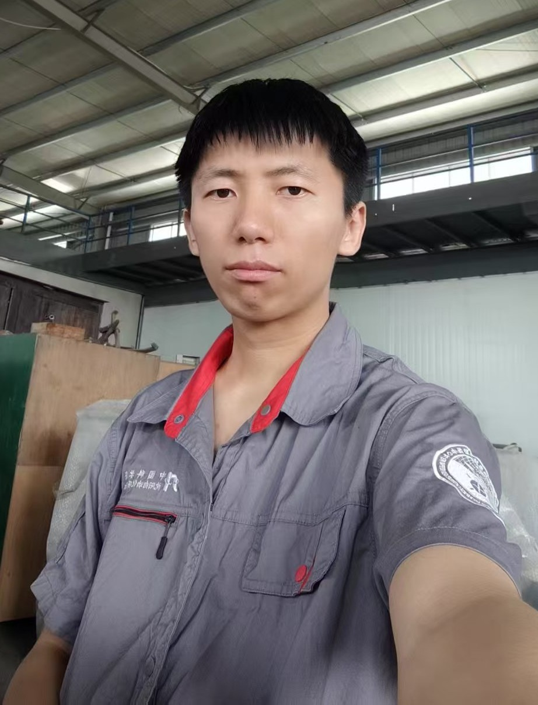
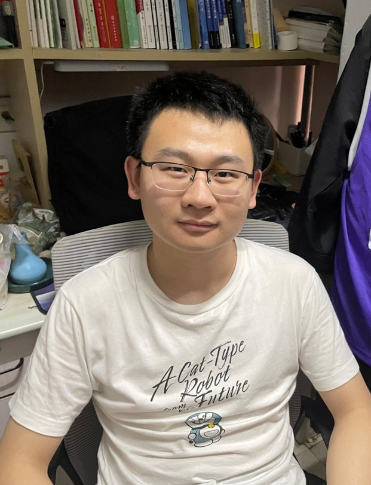
Open the map to load the location.